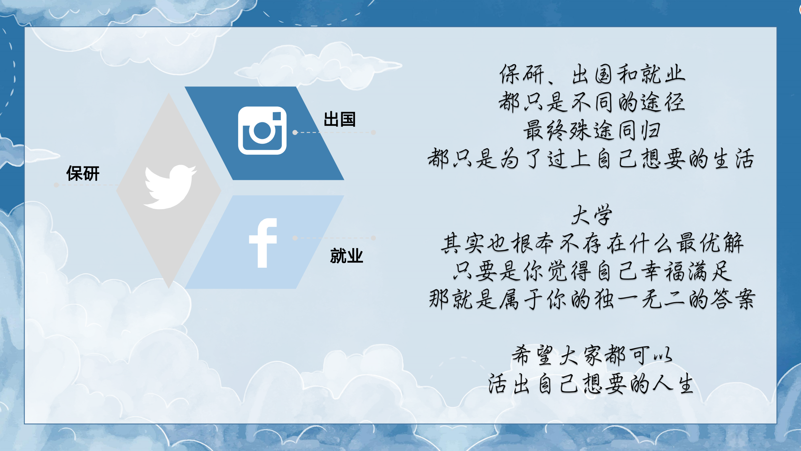
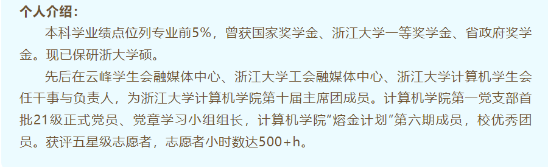
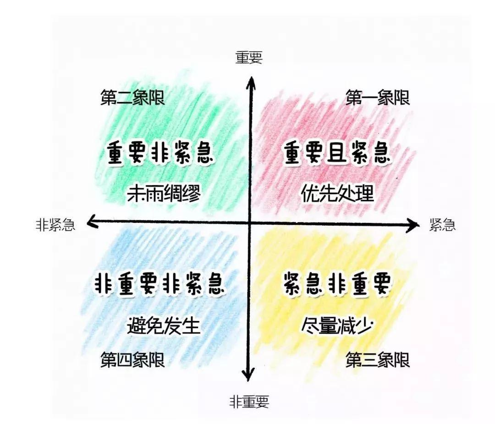
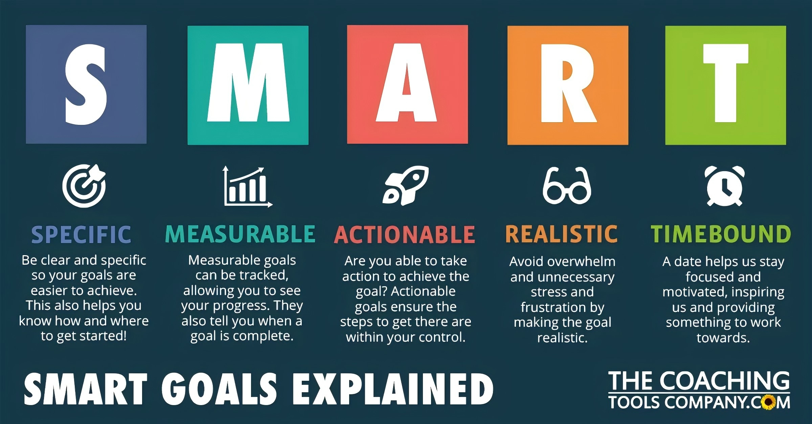
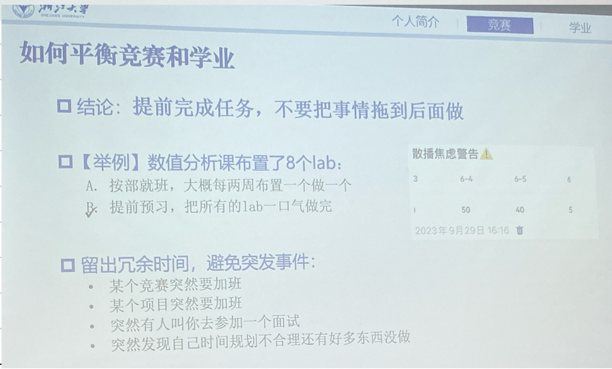
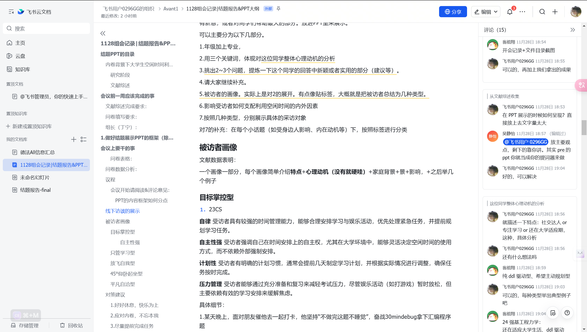
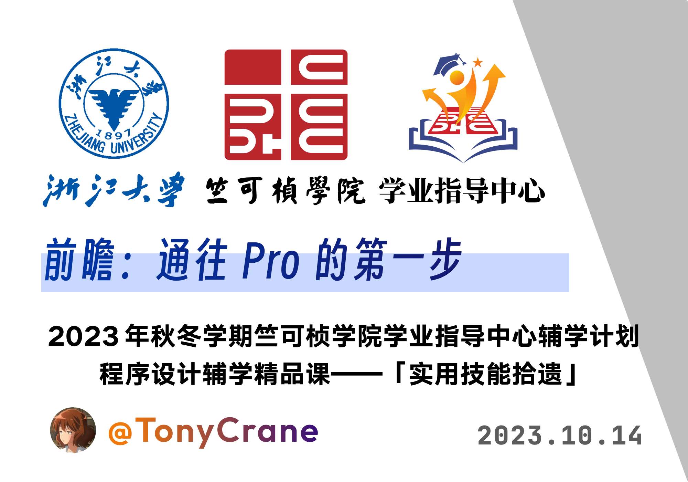
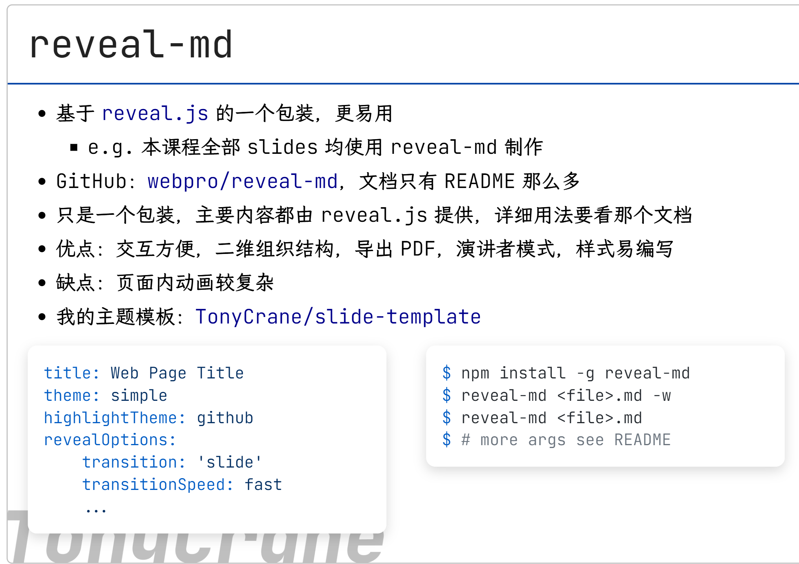

<!-- .slide: data-background="lec0/cover.png" --> <!--s--> <!-- .slide: data-background="lec0/background.png" --> <div class="middle center"> <div style="width: 100%"> # Part.1 研究阶段 </div> </div> <!--v--> <!-- .slide: data-background="lec0/background.png" --> ## 研究时间轴 - 线上问卷设计 - 问卷分发 - 数据分析 - 开题报告 - 4次(?)组会 - 文献综述撰写 - 确定文献检索的3个角度 - 心理学&脑科学 - 社会背景e.g.内卷&优绩主义 - 家庭背景e.g.籍贯&家庭经济状况 - 文献搜集 - 文献总结 - 线下访谈 - 访谈问题设计 - 访谈 - 访谈材料的**归类分析** - 结题展示&报告撰写 - TonyCrane - 21 级图灵班信息安全专业 - 浙江大学 [AAA](https://zjusec.com/) 战队成员 - B 站知识区 up 主 [@鹤翔万里](https://space.bilibili.com/171431343)（绝赞停更中） - GitHub [@TonyCrane](https://github.com/TonyCrane) - 主页 https://tonycrane.cc/ - 笔记 https://note.tonycrane.cc/ <!--v--> <!-- .slide: data-background="lec0/background.png" --> ## 内容与时间安排 <div class="three-line"> |课程|日期|讲师| |:--|:--|:--| |lec0：前瞻：通往 Pro 的第一步|10.14（秋四周）|TonyCrane| |lec1：Shell 基础及 CLI 工具推荐|10.22（秋五周）|45gfg9| |lec2：Git/GitHub 及开源基础|11.05（秋七周）|TonyCrane| |lec3：Markdown 语法及应用|11.19（冬一周）|TonyCrane| |lec4：LaTeX 排版简要介绍|12.03（冬三周）|45gfg9| |lec5：如何排出规范、美观的文档|12.17（冬五周）|TonyCrane| |lec6：网络/网站基础知识概述|12.31（冬七周）|45gfg9| </div> <!--s--> <!-- .slide: data-background="lec1/background.png" --> <div class="middle center"> <div style="width: 100%"> # Part.2 文献综述 </div> </div> <!--v--> <!-- .slide: data-background="lec0/background.png" --> ## Psychology - 心理学角度 <div style="text-align: center;"> <img src="lec0/t1.png" width="85%" style="margin: 0 auto;"> </div> <!--v--> <!-- .slide: data-background="lec0/background.png" --> ## Psychology - 心理学角度 - 文献no 1 <!--v--> <!-- .slide: data-background="lec1/background.png" --> ## Psychology - 心理学角度 > <span class="serif">"end point of a railway line," 1888, from terminal (adj.); **sense of "device for communicating with a computer" is first recorded 1954.** Earlier "final part of a word" (1831).</span> > > -- [在线语源学词典 (Online Etymology Dictionary)](https://www.etymonline.com/word/terminal) - 文献2 [图片来源：Gorthmog, CC BY-SA 4.0, Wikimedia](https://commons.wikimedia.org/wiki/File:DEC_VT100_terminal_transparent.png) <!--v--> <!-- .slide: data-background="lec1/background.png" --> ## Social - 社会背景角度 - 内卷 - 内卷 - 优秀主义 <div class="fragment"> 都有什么常见的 Terminal 呢？ </div> <div class="fragment"> - **Windows**：Windows Terminal（推荐） - **Linux**：Gnome Terminal、Konsole、LXTerminal 等 - **macOS**：Terminal.app、iTerm2（推荐）等 - 跨平台： - [Alacritty](https://alacritty.org)：基于 Rust 开发 - ... </div> <!--v--> <!-- .slide: data-background="lec1/background.png" --> ## Social - 社会背景角度 - 优秀主义 - “壳层”，也是一个程序，是用户与系统内核交互的界面 - 负责接收并解析输入，交给更底层（操作系统）来执行，并返回输出 <div class="fragment"> 都有什么常见的 Shell 呢？ </div> <div class="fragment"> - Windows 下：cmd.exe、PowerShell 5 - \*nix 下： - **sh**：Bourne Shell，最早、最经典的 shell - **bash**：Bourne Again Shell，最常用的 shell - 大部分 Linux 发行版的默认 shell - **zsh**：Z Shell，功能强大、可高度自定义的 shell - macOS Catalina 起成为默认 shell - **fish**：Friendly Interactive Shell，开箱即用、全平台的 shell - <ruby>ash<rp>(</rp><rt>Almquist Shell</rt><rp>)</rp></ruby>, <ruby>csh<rp>(</rp><rt>C Shell</rt><rp>)</rp></ruby>, <ruby>ksh<rp>(</rp><rt>Korn Shell</rt><rp>)</rp></ruby>, nushell, <ruby>pwsh<rp>(</rp><rt>PowerShell 7</rt><rp>)</rp></ruby>, xonsh, ... </div> <!--v--> <!-- .slide: data-background="lec1/background.png" --> ## Personal - 个人背景 - 家庭 - <!--v--> <!-- .slide: data-background="lec1/background.png" --> ## Personal - 个人背景 - 籍贯 - 命令行也是一种操作计算机的方式，理论上可以做任何事情 - 可以让你手在键盘上就能控制电脑，而不需要鼠标点来点去 - 在没有显示器的机器上（例如通过 ssh 连接服务器），只能通过命令行操作 <div style="text-align: center;"> <img src="lec1/img1.png" width="65%" style="margin: 0 auto;"> </div> <!--v--> <!-- .slide: data-background="lec1/background.png" --> ## 为什么要用命令行？它能做什么？ 别再用 Dev-C++ 写程序了，尽早使用 VSCode 与命令行 gcc ```shell $ cat a.c #include <stdio.h> int main(void) { puts("Hello world!"); } $ gcc a.c -o a $ ./a Hello world! ``` <!--v--> <!-- .slide: data-background="lec1/background.png" --> ## \* 关于 zsh 的一些推荐配置 - oh-my-zsh：<https://ohmyz.sh>，一个 zsh 的配置框架，支持主题、插件等配置 <blockquote class="serif">Oh My Zsh will not make you a 10x developer...but you may feel like one!</blockquote> - Powerlevel10k（p10k）：一个 oh-my-zsh 的主题，配置简单，美观 - 插件： - git：oh-my-zsh 自带插件，提供 git 相关的自动补全与 alias - sudo：oh-my-zsh 自带插件，按两次 Esc 自动添加 sudo - z：oh-my-zsh 自带插件，快速跳转到曾经跳转过的目录 - zsh-autosuggestions：自动提示输入过的历史命令 - zsh-syntax-highlighting：命令语法高亮 - ... 具体安装方法等可参考：<https://note.tonycrane.cc/cs/tools/shell/> <!--s--> <!-- .slide: data-background="lec2/background.png" --> <div class="middle center"> <div style="width: 100%"> # Part.3 线上问卷分析 </div> </div> <!--v--> <!-- .slide: data-background="lec0/background.png" --> ## 调查结果 - 可视化 <div style="text-align: center;"> <img src="lec0/git.gif" width="85%" style="margin: 0 auto;"> <p style="margin-top: 0.1em;">lazygit</p> </div> <!--v--> <!-- .slide: data-background="lec0/background.png" --> ## 显示的规律 1. 心理健康和假期安排的关系： - 大多数学生认为当前的假期安排对他们的心理健康有“比较积极”的影响（39人），尽管有一定的压力但整体感觉不错。 - 22人认为影响“一般”，12人感到“比较消极”，偶尔感到压力和焦虑，只有1人认为影响“非常消极”。 2. 理想中的假期安排? - 学生理想中的假期安排多种多样，但普遍包括“完全休息，放松身心”、“学习新技能或知识”、“旅行或探索新地方”和“从事个人爱好”。 - 最受欢迎的组合是“完全休息，放松身心”加上其他活动，如学习新技能、旅行、或自我探索与反思，这表明学生希望在假期中既能放松又能有所收获。 <div style="text-align: center;"> <img src="lec2/git-history.png" width="60%" style="margin: 0 auto;"> </div> <!--s--> <!-- .slide: data-background="lec2/background.png" --> <div class="middle center"> <div style="width: 100%"> # Part.4 线下访谈 - 5种画像 </div> </div> <!--v--> <!-- .slide: data-background="lec2/background.png" --> ## 5 Portrait <div style="text-align: center;"> <img src="lec2/model.png" width="100%" style="margin: 0 auto;"> </div> - 目标掌控型 - 目标明确，自我要求高，自主性强 - 只管学习型 - 专注于学业，对其他活动不感兴趣 - 放飞自我型 - 乐观开朗，自由自在，不受外界影响 - 45度角型 - 保持平衡，不过度追求 - 平凡自洽型 - 乐观平和，对生活有自己的看法 <!--v--> <!-- .slide: data-background="lec2/background.png" --> ## 目标掌控型 - 动机之源 1. 教育背景：来自顶级高中，考入Top3名校 - 有很强的能力和竞争意识。高中时期可能经历了较大的压力和竞争 - 高效的时间管理和自我调节来应对学业挑战。 - 习惯在高压力的环境下高效运作，因此他对空闲时间的安排表现出较强的控制感。 - 在大学中，他仍然保持着高效、目标导向的时间管理方式，确保能够平衡学业与娱乐 2. 自律 - 早期(高中等)就养成了高效利用时间的习惯 - 他认为自己的学业和生活是可以控制的，因此他会尽量避免不必要的浪费时间的行为，保持高效率。 <!--v--> <!-- .slide: data-background="lec2/background.png" --> ## 目标掌控 - Details 1. 23级 CS - 对"如何减轻压力感"回答：理性分析 - 打游戏充其量只能麻痹一下 - 真正减轻压力是充分复习，提前2周左右开始刷题，准备等 - 某天晚上，朋友催他去一起打卡，他坚持“不做完这题不睡觉”，奋战30min拿下汇编程序题 2. 23级 信工 - **学习娱乐两手抓** - 受访者一手抓朋友圈、一手抓团建、一手抓绩点、一手抓上课、一手抓自习 - **主动规划** - 受访者使用计划工具（求是潮手机站、滴答清单等）、设定短期和长期目标 - **追求劳逸结合** - 受访者的一个目标是希望做到学业、体锻、社交等多方面的平衡。 <!--v--> <!-- .slide: data-background="lec0/background.png" --> ## 画像 - Summary 1. 目标明确，规划性强 - 有明确的长短期目标，并通过有意识的时间管理来逐步实现这些目标。他们通过每周的学习任务安排来确保自己在学术上的持续进步，合理安排放松和娱乐活动，以此保持身心的平衡和长期目标的达成。 2. 自主性与控制感 - 根据自己的需求和任务优先级自主调整时间和活动安排。 - 根据学业任务的紧迫程度灵活调整计划。 3. 内卷应对策略 - 合理的时间管理和复习策略来应对学业压力。目标掌控者通- 通过提前复习、合理分配学习任务时间来减轻内卷带来的焦虑，并选择适当的放松方式来应对压力。 4. 舒适感与心理自洽 - 目标掌控者不仅仅注重外部任务的完成，还会关注自己内心的舒适感和心理自洽。尽管学业任务繁重，但他们通过合理安排时间和灵活调整，保持自己的心理平衡。游戏等放松活动虽然不能完全缓解内卷压力，但却是短期放松和心理调节的方式，帮助他们保持舒适感，从而更好地应对学业压力。 5. 社会文化影响与个体选择 - 身边同学的行为和周围环境（如寝室氛围）对目标掌控者有一定影响，但他们依然坚持自己的安排，避免被外部环境完全左右。目标掌控者虽然能够应对外部压力，但也会受到社会文化背景的影响。 <!--v--> <!-- .slide: data-background="lec2/background.png" --> ## 只管学习型 - 动机之源 1. 教育背景：来自相对普通高中，考入名校 - 高中时期可能经历了较大的压力和竞争 - 习惯高中思维，优绩主义，高压力的环境下高效运作，因此他对空闲时间的安排表现出较强的控制感。 - 平衡学业与娱乐 2. 家庭背景- 专注学业 - 社交，其他兴趣爱好较少 <!--v--> <!-- .slide: data-background="lec2/background.png" --> ## 只管学习型 - Details 1. 24级 自动化 - 作为大一的学生，受访者已展现出较强的独立性，能够主动安排学习和活动，同时也具备一定的计划性，虽然目前实施上仍需改进。此外，他也能自觉地意识到学习与个人发展的平衡。 - 爱好广泛，但学习压力较大，课业繁重 - 深知个人对很多爱好都是三分钟热度，倾向用学习填充空闲时间以减少焦虑。 2. 24级 CS - 平时周末基本都在自习室，社交范围较小，学业的投入较高 - 没有参加社团，学生组织 - 学习之外基本只有打游戏，羽毛球等活动 <!--v--> <!-- .slide: data-background="lec2/background.png" --> ## 放飞自我型 - 动机之源 1. 教育背景：来自相对严格高中，比较衡水 - 高中时期管理较严格，他律主导 - 大学无严格管理，心态反弹，追求自由自在的生活方式 2. 家庭背景- ?需要思考or chatgpt - 社交较多 <!--v--> <!-- .slide: data-background="lec2/background.png" --> ## 放飞自我型 - Details 1. 24级 自动化 山东 - 看上去没有ddl的样子 - 每天似乎都有1h+的空闲时间... - 无计划 - 想到什么做什么，以至于~~有两次开会都迟到了~~ 2. 24级 CS 福建 - 有时候晚上十点多被同学约去吃夜宵，欣然前往，甚至很晚才回宿舍 - 自认为空闲时间比较"虚度光阴"，对时间管理有反思意识，但尚未有具体行动改进 - 似乎每晚都可以有时间玩游戏,经常发出"现在干什么好呢?"的疑问 <!--v--> ## 放飞自我型 - 动机分析 - 1. 任务驱动：作业、组织任务等具体目标成为优先安排的核心依据。 - 2. 倾向于即时满足，对时间规划和长期目标的意识较弱。 - 3. 时间安排受临时目标和外部因素e.g.同学邀约 影响较大,自我驱动能力和时间规划意识较弱 - 4. 存在一定的**缓冲心理**,认为任务较少,暂时对时间利用效率不够重视。 <!--v--> <!-- .slide: data-background="lec2/background.png" --> ## 45度角型 - 动机之源 1. 教育背景：来自较著名高中，比较-- - 高中时期自我要求高，他律主导 - 大学机会，诱惑多，与有限精力时间冲突 2. 家庭背景- ?需要思考or chatgpt - 社交较多 <!--v--> <!-- .slide: data-background="lec2/background.png" --> ## 45度角型 - Details 1. 23级 农资环 江西 - 计划性高但执行力有限 - 使用四象限法,规划优先级 - 用日程表规划，但有时候被玩游戏破坏 - 认为自己的时间利用效果"仍不太得当"，尤其是游戏等娱乐活动可能占据过多时间，影响学习效率。 - 但基本能合理安排时间用于学习,实验室,云峰学综工作等 2. 24级 海洋工程与技术 杭二中 - 组队活动时开始充满想法，但实际没有时间施行，最后不了了之 - 五天早八,3个社团or组织，运动队副队长 - 但处在高压下,每天内耗焦虑 <!--v--> ## 45度角型 - 动机分析 - 1. 心有余而力不足,想做1做2,实际可能只做了0.5 - 2. 处在高压下，每天内耗焦虑 - 3. 借鉴同学的时间管理方法,希望通过挑战成长 <!--v--> <!-- .slide: data-background="lec2/background.png" --> ## 平凡自洽型 - 动机之源 1. 教育背景：来自相对严格高中，比较衡水 - 大学课业压力较重 2. 家庭背景- ?需要思考or chatgpt - 社交较多 <!--v--> <!-- .slide: data-background="lec2/background.png" --> ## 平凡自洽型 - Details 1. 23级 园艺 - 选择性出勤，让室友代为签到，理由是"某些课程教学质量有待提高，听课不必要" - 每月去西湖"什么都不做"，通过静坐放空缓解焦虑和压力，表现出对自我舒适的关注 2. 24级 CS 福建 - 有时候晚上十点多被同学约去吃夜宵，欣然前往，甚至很晚才回宿舍 - 自认为空闲时间比较"虚度光阴"，对时间管理有反思意识，但尚未有具体行动改进 - 似乎每晚都可以有时间玩游戏,经常发出"现在干什么好呢?"的疑问 <!--v--> ## 平凡自洽型 - 动机分析 - 1. 倾向于按个人需求而非社会期望安排时间。 - 2. 自主性与舒适导向,生活节奏自主化,将"舒适"作为衡量标准，逐渐摆脱外界评价。 - 通过游戏、健身等放松活动代替深层次自我提升 - 3. 个性选择:注重自我节奏,远离竞争核心,追求心理自洽 - 4. 批判内卷，但无法摆脱环境的影响，表现出被动应对 ## GitHub 基本用法实操 - 新建 repo，基本设置 - 添加代码： - 从头开始的空项目：直接 clone - 从本地非 git 项目上传：init 后修改 remote - 修改、add、commit、push - 分支、合并：branch / GitHub 上操作 - release：扩展的打 tag - 小组项目合作：协作者、私有 repo 权限管理 - pull request、merge、conflict 处理 <!--s--> <!-- .slide: data-background="lec2/background.png" --> <div class="middle center"> <div style="width: 100%"> # Part.5 对策建议 </div> </div> <!--v--> <!-- .slide: data-background="lec2/background.png" --> ## 做减法 **明确目标，为自己减负** - 明确自己想做什么，宁缺毋滥 - 删除并非一定要完成的任务或ddl e.g.非必要的社团or讲座 - 大学的选择有很多种,每种选择都可以获得美丽 <!--v--> <!-- .slide: data-background="lec2/background.png" --> ## 找到自我 - 优秀学姐寄语 - 21级 保研学姐 分享建议 <div style="text-align: center;">  </div> <!--v--> <!-- .slide: data-background="lec2/background.png" --> ## 找到自我 - 优秀学姐寄语 <div style="text-align: left;">  </div> <div style="text-align: right;"> </div> <!--v--> <!-- .slide: data-background="lec2/background.png" --> ## 善用计划方法 - 1. 四象限法（紧急/不紧急，重要/不重要） <div style="text-align: center;">  </div> <!--v--> <!-- .slide: data-background="lec2/background.png" --> ## 善用计划方法 - 2. SMART原则(安排有效计划) - 具体的 (Specific) - 可以衡量的 (Measurable) - 可以达到的 (Attainable) - 相关性 (Relevant) - 明确的截止期限 (Time-bound) <div style="text-align: center;">  </div> <!--v--> <!-- .slide: data-background="lec2/background.png" --> ## 提前完成,留出余量 - 今天布置的作业今天做完,即使ddl是一周后 - 如何选择? <div style="text-align: center;">  </div> <!--v--> <!-- .slide: data-background="lec2/background.png" --> ## 情绪自洽 - 和解 - 关注个人情绪 - 注意身体健康对情绪的影响 - 学废了就去跑步or打球吧~ - 学习控制外界压力和社会期望对个人的影响 - 真正关心你的人不会替你决定 <!--v--> <!-- .slide: data-background="lec2/background.png" --> ## 寻求平衡 - 学业,娱乐,体育等都需考虑，最好不要顾此失彼 - 减少"假性休息" - 休息就好好睡觉or去自然中走一走 - 刷视频 - 注意力黑洞,难以休息 <!--v--> <!-- .slide: data-background="lec2/background.png" --> ## 对优绩主义采取合适的态度 - 做 "分子" 时消极 看淡 以自谦 - 做 "分母" 时积极 进取 以自驱 - 人生在世，有了满足的“道”，又有不满足的“儒” - 一道一儒，平衡调剂，不就是古人说的"儒道互补"? <!--s--> <!-- .slide: data-background="lec2/background.png" --> <div class="middle center"> <div style="width: 100%"> # Part.6 感想 & 收获 </div> </div> <!--v--> <!-- .slide: data-background="lec2/background.png" --> ## 会议效率之谜 - 群里9人,组会5人，积极讨论3人，如何解? - 信息不对称,本地编辑合作难,一人打字, 全员观战? <!--v--> <!-- .slide: data-background="lec2/background.png" --> ## 引入企业协作平台 - 飞书 - 飞书是一站式企业协作与管理平台，整合即时消息、会议、云文档功能 - 我们主要看中云文档&即时评论 - 合作编辑，支持markdown语法，所见即所得 - 上传图片,PPT,excel方便 <!--v--> <!-- .slide: data-background="lec2/background.png" --> ## 先进企业管理经验 - 飞阅会 - 联想 影视飓风Tim 创业经验分享(10:26) <div style="text-align: center;"> <iframe width="900" height="550" src="//player.bilibili.com/player.html?bvid=BV17u411E7UK" frameborder="0" allow="accelerometer; autoplay; encrypted-media; gyroscope; picture-in-picture" allowfullscreen></iframe> </div> <!--v--> <!-- .slide: data-background="lec2/background.png" --> ## 飞阅会 - 静默阅读10min,以文本形式批注 - 优点:强迫理清思路,集中讨论的问题 - 会议结束自然留下成型文档，便于后续整理 <!--v--> <!-- .slide: data-background="lec2/background.png" --> ## 会议实操效果 <div style="text-align: center;">  </div> <!--v--> <!-- .slide: data-background="lec2/background.png" --> ## Reveal-md 幻灯片 - PPT文本框重重叠叠,模板一改全乱，鼠标点不完，如何解? - 启发来自 2023 秋冬学期竺可桢学院朋辈辅学「实用技能拾遗」课程 <div style="text-align: center;">  </div> <!--v--> <!-- .slide: data-background="lec2/background.png" --> ## Reveal-md 幻灯片 - 感谢TonyCrane学长 - 21 级图灵班信息安全专业 - 浙江大学 [AAA](https://zjusec.com/) 战队成员 <div style="text-align: center;">  </div> <!--s--> <!-- .slide: data-background="lec2/background.png" --> <div class="middle center"> <div style="width: 100%"> # 谢谢大家 # Questions? </div> </div>